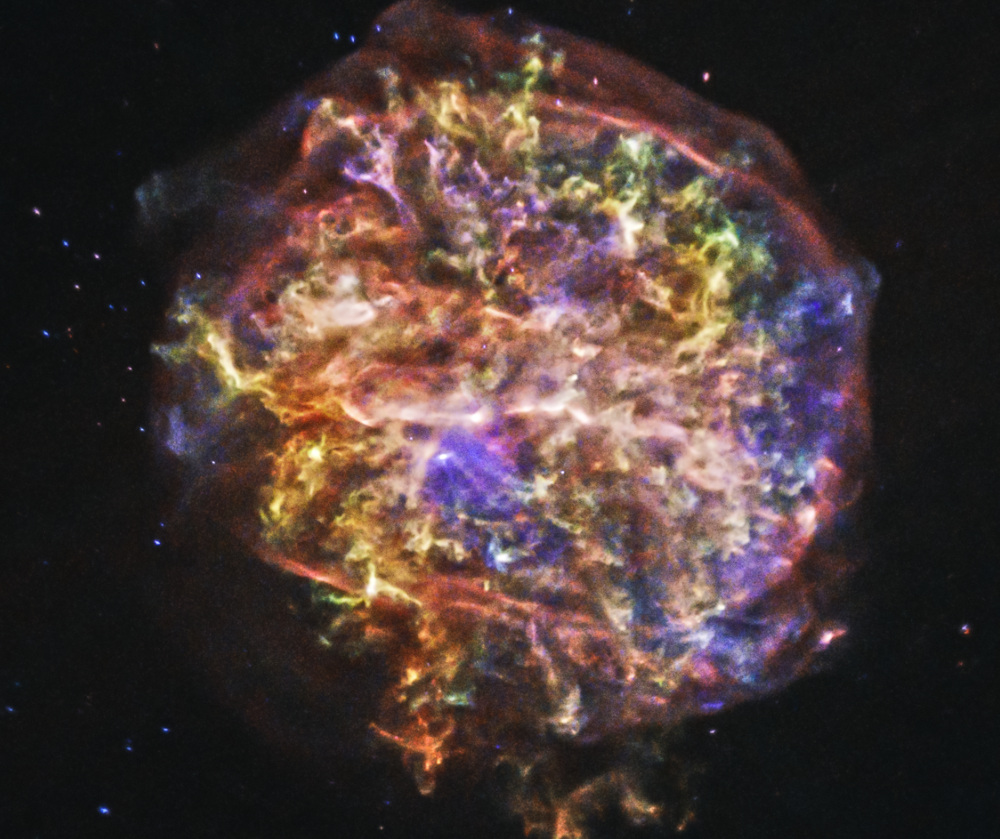
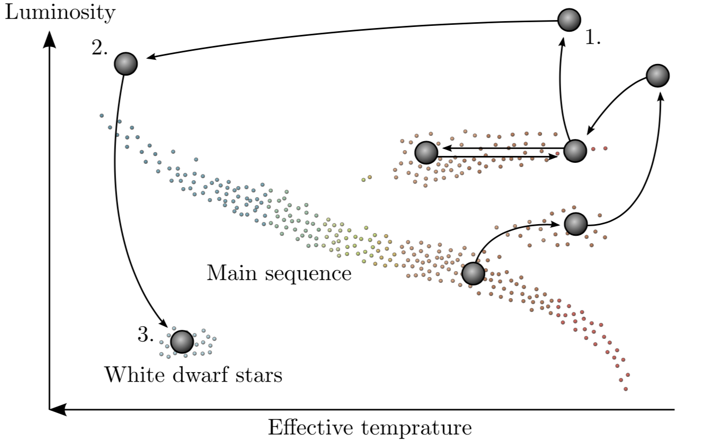
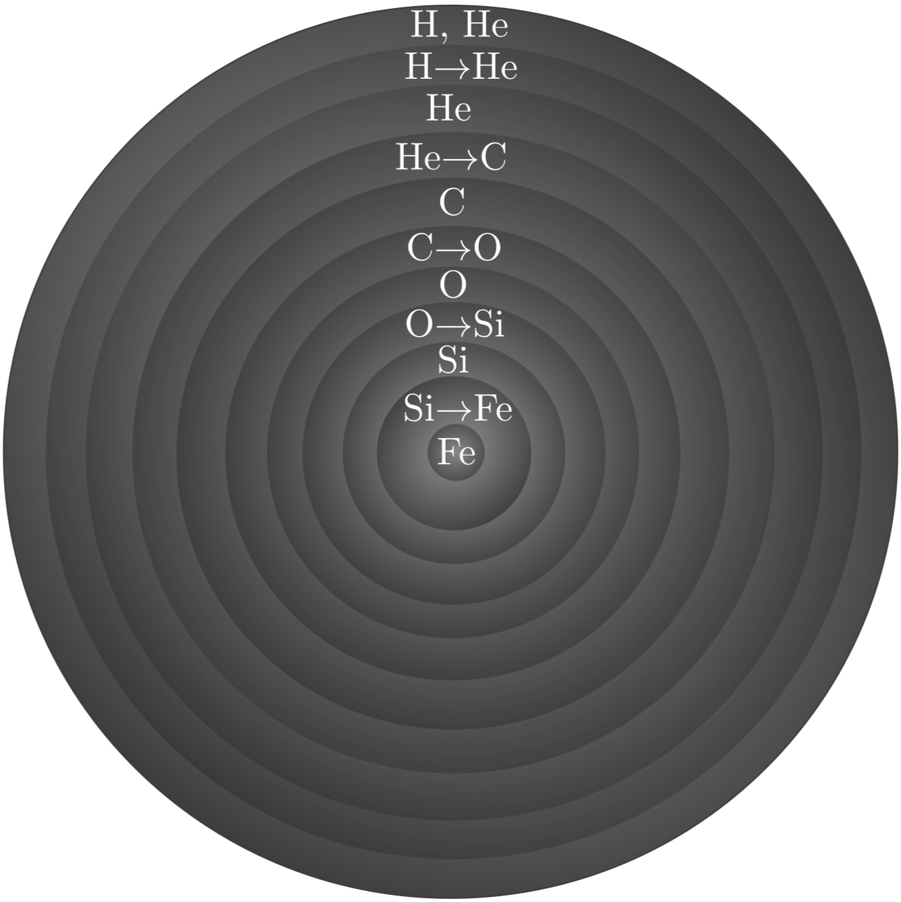
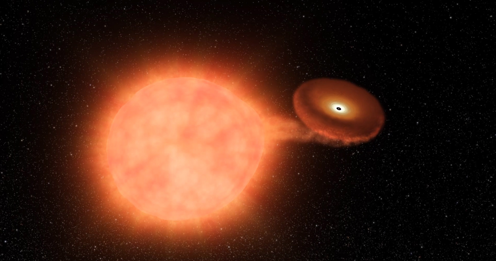

Du må bruke presentasjonsmodus/fullskjermsvisning for å lese denne, men du skal ikke bruke frem/tilbake-knappene, KUN knappene som dukker opp på sliden for å ta deg videre! Ofte må du laste filen ned til maskinen din og åpne den der for å få til dette. Merk at noen knapper vil åpne nettskjema, videoer eller andre ressurser i internettbrowseren din. Når du gjør det riktig, skal du kun se en side av gangen, og når du trykker på knappene som dukker opp på skjermen så skal disse ta deg frem/tilbake i dokumentet. Du vil miste mye læringsutbytte hvis du ser flere slides av gangen. Får du det ikke til, spør foreleser/gruppelærer!
Trykk denne knappen for å begynne
Dette er en erstatning for forelesningen i emnet. Har du gått skikkelig gjennom disse interaktive forelesningsnotatene så trenger du ikke å lese de fulle forelesningsnotatene (med unntak av oppgavene bak). All informasjonen du trenger, får du her. Du kommer til å få mange grublespørsmål og diskusjonsoppgaver, det er meningen at disse skal gjøres i grupper av minst 2, maks 4 studenter. Det er defor sterkt anbefalt at dere sitter sammen i grupper når dere går gjennom disse interaktive forelesningsnotatene, du vil få betydelig mer utbytte av dem på den måten. En god ide kan være å bli enige om å treffes til den faste forelesningstiden og bruke forelesningslokalet som kommer til å være resevert til dette. Hvis du har kommentarer ris/ros til disse forelesningsnotatene eller til emnet, trykk på 🙂 🙠knappen som du finner på alle sider.
Trykk denne knappen for å begynne
HUSK at du får mer ut av de interaktive forelesningsnotatene når du gjør de sammen med noen. Diskusjonene med andre er svært viktige.
Det er mange spørsmål/grubliser underveis, sett dere selv en tidsgrense, 1-2 minutter på de korte, 4-5 minutter på de lenger. Ha en alarm ved siden av, ellers kommer dere til å bruke alt for langt tid. Har dere ikke fått det til etter 5 minutter, gå videre, se svaret og lær!
Er du i det minste tvil om noe, så finnes det nå en PADLETknapp, trykk det og still spørsmål med en gang mens du enda husker spørsmålet!
Trykk denne knappen for å begynne
Forrige side
 Velkommen til del 3E! Vi har allerede sett hva som skjer med aldrende stjerner. Nå skal vi se hva som skjer i dødsøyeblikket og etterpå. Hvordan ender en stjerne sitt liv? Og hvorfor slik? Hva slags rester får vi igjen etterpå? Og spesielt, hva kommer til å skje med solen?
(Illustrasjon: Røntgenbilde av supernovarest G292.0+1.8 i Melkeveien (NASA/Chandra) Neste side
‘ Forrige side🙂 🙁IntroduksjonPADLET
Ikke fortvil over at det er mange sider her. Mange av disse sidene er svært korte med bare en setning på hver. Denne forelesningen rekker jeg normalt å komme gjennom i løpet av en dobbelttime i vanlig forelesning og er ikke lenger enn de andre.
Vi begynner som vanlig... ...med litt brainstorming. Som det er svært viktig at du gjør før du går videre.
Trykk her for å varme opp
Er du klar og har sendt inn skjemaet? Nei Ja
Forrige side🙂 🙁IntroduksjonPADLET
Store deler av del 3E bygger på del 1G om kvantegasser. Du bør ta en rask repitisjon, enten i vanlige forelesningsnotatene eller i de interaktive. Du bør:
vite hva en degenerert gass er og kunne forklare dette med analogien om bokser i p⃗-rommet.
vite hva som gjør en gass degenerert og forstå hvorfor den blir degenerert i disse tilfellene.
vite hva degenerasjonstrykket er, hva den fysiske prosessen som setter opp dette trykket er.
Bare når du har full kontroll på dette, har det noen mening å gå videre i denne forelesningen.
Jeg har full kontroll på disse temaene og er klar!
Nytt tema:
Stjerner med lav masse
Forrige side🙂 🙁Stjerner med lav massePADLET
På slutten av forelesningen i del 3D fulgte vi en stjernes livsløp helt til asymptotisk kjempe. For en stjerne med lav masse (M < 8M⊙), hvordan ser strukturen til stjerna ut nå? Gå tilbake og repter! Tegn stjerna med skall, forklar hvilket grunnstoff som dominerer hvert skall og hvor det foregår fusjonsreaksjoner og hvilken type.
Ok, jeg har repetert og tegnet stjerna med skall!
Forrige side🙂 🙁Stjerner med lav massePADLET
Da er du klar til å se denne videoen
for å få noen hint til hva som skjer videre.
Forrige side🙂 🙁Stjerner med lav massePADLET
Så vi har en degenerert karbon-oksygen-kjerne i midten av stjerna. Rundt har vi et skall med helium som fusjonerer til karbon og oksygen. Deretter et skall med degenerert helium som er for kaldt til å fusjonere. Rundt det et skall med hydrogen som fusjonerer til helium. Og rundt det et skall med hydrogen som ikke fusjonerer. Hva tror du skjer videre nå?? Diskuter og tenk hva du tror kommer til å bli neste forandring. Du har sett dette allerede et sted før i en stjernes utvikling...
Jeg har tenkt og har noen ideer
Forrige side🙂 🙁Stjerner med lav massePADLET
Se denne videoen
for å se hva som skjer videre!
Forrige side🙂 🙁Stjerner med lav massePADLET
Hva tror du skjer videre etter denne eksplosjonen? Prøv og tegn og bruk fysikk til å se for det hva du tror kan skje!
Jeg har tenkt og har noen forslag
Forrige side🙂 🙁Stjerner med lav massePADLET
I denne videoen
får du svaret.
Forrige side🙂 🙁Stjerner med lav massePADLET
Etter flere etterfølgende helium-skallflash blir altså de yttre delene av stjernen kastet av, bit for bit, helt til vi sitter igjen kun med den elektrondegenererte CO-kjernen. Dette kaller vi en hvit dvergstjerne. Solen kommer til å bli en slik hvit dvergstjerne. Rundt denne hvite dvergen har vi en stor kuleformet gassky som består av all gassen som ble kastet av stjerna. Dette kaller vi en planetarisk tåke. Men hvor på HR-diagrammet finner du nå denne hvite dvergen?
(Illustrasjon: Helixtåken som er omkring 215pc unna er en av våre nærmeste planetariske tåker. Ringen spenner ut omkring 1pc og har en vinkelutstrekning på himmelen på rundt halvparten av fullmånen. NASA/ESA)
Forrige side🙂 🙁Stjerner med lav massePADLET
Ettersom de ytre lagene blir kastet av, så ser blir jo overflaten av stjerna et sted lenger og lenger inn nærmere kjernen i stjerna. Hva betyr det for temperaturen? Og hva skjer etterhvert med luminositeten. Ikke gå videre før du har tegnet stjernas vei fra den asymptotiske grenen til hvit dverg.
Forrige side🙂 🙁Stjerner med lav massePADLET
 Var det slik du tenkte? Vi kommer nærmere og nærmere kjernen, der er temperaturen høyere så vi går mot venstre i HR-diagrammet. Etterhvert krymper radiusen kraftig slik at luminositeten også minsker (husk L = 4Ï€R2σT4). Enig? Men hva skjer så videre med den hvite dvergen? Hva tror du skjer med den de neste millioner av år?
Forrige side🙂 🙁Stjerner med lav massePADLET
Den har ikke lenger en energikilde. Dermed vil den vel miste energi kontinuerlig? Og mister den energi, ja, så går vel temperaturen ned? Men dette vi vel ikke påvirke stjerna ellers: den hydrostatiske likevekten mellom degenerasjonstrykket og gravitasjon påvirkes ikke av temperaturen (husker du at trykket i en degenerert gass ikke påvirkes av temperaturen? Repeter i del 1G hvis nødvendig). Den hvit dvergen blir altså langsomt kaldere og kaldere samtidig som luminositeten også faller. Den blir etterhvert usynlig på grunn av svak stråling og vi har fått en svart dverg.
Forrige side🙂 🙁Stjerner med lav massePADLET
Vi skal snart lage oss en forenklet matematisk modell av en hvit dverg, men før det, la oss se hva som skjer med de massive stjernene...
Nytt tema:
Stjerner med høy masse
Vi nærmer oss halveis her. Du bør nå ta deg 5 minutter pause. Løp fra fysikkbygningen og opp til HF (helt frem til en inngangsdør) og tilbake igjen uten pause. Oi, det ble kanskje litt mer enn 5 min... Spar kaffen litt enda er du snill... Sett igang!
Forrige side🙂 🙁Stjerner med høy massePADLET
Tilbake igjen til slutten av forelesningen i del 3D der vi fulgte en stjernes livsløp helt til asymptotisk kjempe. Vi skal nå se på stjerner med høyere masse (M > 8M⊙) Hva tror du nå skjer som er forskjellige fra det som skjer i stjerner med lav masse? Og hvorfor? Tygg litt på den før du går videre!
Forrige side🙂 🙁Stjerner med høy massePADLET
I denne videoen
får du svaret.
Forrige side🙂 🙁Stjerner med høy massePADLET
 Vi har altså en slik stjerne. Jern kan ikke fusjonere videre. Vi har ingen fusjonsreaksjoner som kan gi nok trykk til a stå imot tyngdekrafta fra denne massive stjerna. Hva tror du skjer da? Bruk fysisk tenking, hva er de mulige utfallene tror du? Hva må skje videre?
Jeg har tenkt og har noen forslag!
Forrige side🙂 🙁Stjerner med høy massePADLET
I denne videoen
får du se hva som skjer videre.
Forrige side🙂 🙁Stjerner med høy massePADLET
Elektrondegenerasjonstrykket er altså ikke stort nok til å stå imot gravitasjon. Men hva iallverden kan da skje videre? Kvantefysikken forbyr absolutt at vi har fler enn 2 elektroner i hver av disse boksene i p⃗-rommet (se del 1G). Men de blir nå presset tettere sammen på grunn av gravitasjon??? Det går ikke??? Hvilke mulige eller umulige utfall har denne vanskelige situasjonen??? Tenk etter alle mulige og umulige løsninger? Hva kan naturen nå finne på?
Hmmmmm, dette var litt av en nøtt! Men jeg har fundert litt!
Forrige side🙂 🙁Stjerner med høy massePADLET
I denne videoen
får du se hva som skjer videre.
Forrige side🙂 🙁Stjerner med høy massePADLET
Så det ser ut til at sjokkbølga fra rekylen fra dannelsen av nøytronkjernen blir stoppet av jernskallet. Og så blir det ingen supernovaeksplosjon som vi nå vet at det skal bli. Vi har glemt en viktig faktor her som gjør at vi ikke får noen eksplosjon. Kan du tenke deg hva det er? Her må du virkelig legge hjernen i bløt!
Hmmmmm, dette var nok en hard nøtt! Men jeg har fundert litt!
Forrige side🙂 🙁Stjerner med høy massePADLET
I denne videoen
får du se hva som gjør at vi likevel får en supernovaeksplosjon.
Forrige side🙂 🙁Stjerner med høy massePADLET
Men for virkelig massive stjerner M > 25M⊙ slik at den gjenværende kjernen i stjerna er større enn 2-3M⊙ (den såkalte Tolman–Oppenheimer–Volkoff-grensen tilsvarende Chandrasekhargrensen for hvite dverger) så blir gravitasjonen i kjernen stor nok til å overvinne nøytrondegenerasjonstrykket! Da begynner gravitasjon å presse kjernen videre sammen, selv om kvantefysikken ikke tillater at nøytronene blir presset tettere sammen. Det er virkelig ikke plass til mer enn 2 nøytroner i hver boks i p⃗-rommet! Har du noen ide om hva naturens løsning blir denne gangen? Hvordan kan vi overkomme dette problemet? Har du en ide? Ja, det tror jeg!Neeeei, dette var en virkelig hard nøtt!
Forrige side🙂 🙁Stjerner med høy massePADLET
Gratulerer! Du er en hot kandidat til Nobelsprisen i fysikk til neste år! Pass på å få en vitenskaplig artikkel om dette ut fort før noen knabber ideen din!
Forrige side🙂 🙁Stjerner med høy massePADLET
Det er ikke så rart, for det er det ingen andre som har heller. Her står forskningsfronten!
Forrige side🙂 🙁Stjerner med høy massePADLET
På en eller annen måte presses kjernen videre sammen. Nøytronene må på en eller annen måte bli borte. Men hvor mye presses kjernen sammen? Til et uendelig lite punkt? Eller til en bitteliten men endelig utstrekning? Ingen vet!. Men sannsynligvis får vi dannet et sort hull, et punkt i rommet med så mye gravitasjon at ikke engang lys slipper ut. Dette skal vi snakke mer om senere i kurset. Neste side
Forrige side🙂 🙁Stjerner med høy massePADLET
Vi har altså 3 mulige utfall her:
For stjerner med masse M < 8M⊙ og dermed kjernemasse mindre enn Chandrasekhargrensen på 1.4M⊙, får vi en hvit dvergstjerne.
For stjerner med masse M > 8M⊙ og M < 25M⊙ og dermed kjernemasse større enn Chandrasekhargrensen på 1.4M⊙ men mindre enn Tolman–Oppenheimer–Volkoff-grensen på 2-3M⊙ får vi en nøytronstjerne.
For stjerner med masse M > 25M⊙ og dermed kjernemasse større enn Tolman–Oppenheimer–Volkoff-grensen på 2-3M⊙ får vi et sort hull.
Jepp, nå er det tid for kaffe
Og du trenger den for nå skal vi gjøre litt regning med kvantegasser. Hvordan var løpeturen? En til frem og tilbake før kaffen! Så er du frisk og klar for regningen...
Ikke lov å fortsette før du har tatt minst 15 min. pause! OG en løpetur. Hold deg fast, nå setter vi igang!
Nytt tema:
Kompakte objekter
Vi skal nå lage noen forenklede modeller av de kompakte objektene, hvite dverger og nøytronstjerner. Vi skal se noen rare egengskaper med disse eksotiske objektene. Spennende!
Forrige side🙂 🙁Kompakte objekterPADLET
Vi skal på de følgende sidene gjøre noe av det samme som vi gjorde for hovedseriestjerner da vi fant en sammenheng mellom luminositet, levetid og masse, men nå for degenererte kompakte objekter som hvite dvergstjerner og nøytronstjerner. Ved å ta utgangspunkt i en kraftig forenkling av uttrykket for hydrostatisk likevekt og bruke at trykket nå tilsvarer degenerasjonstrykket, så kan vi finne en relasjon mellom radiusen til dette kompakte objektet og massen. På den måten kan vi også finne tettheten til disse eksotiske og svært tettpakkede objektene.
Forrige side🙂 🙁Kompakte objekterPADLET
Det er nå du virkelig får brukt for delen om kvantegasser. Men først må vi reptere litt av de ville antakelsene vi gjorde i del 3D. Husker du da vi prøvde å finne en sammeneheng mellom luminositeten, levetiden og masse til en stjerne ved å gjøre noen helt groteske forenklinger? En av de verste var den vi gjorde med likningen for hydrostatisk likevekt. Kan du huske hvordan vi forenklet og trikset for å gå fra $$\frac{dP}{dr}=-\rho g$$ til $$\frac{P_c}{R}=-\rho G\frac{M}{R^2}$$ ???? Her er Pc trykket i kjernen til stjerna, R er radien til stjerna og M er massen. Ja, det gjør jeg (og jeg grøsser enda)Njaaaa, kanskje?
Forrige side🙂 🙁Kompakte objekterPADLET
Var det ikke noe med at vi tar forskjellen dP og dr og gjør disse til veeeeeeldig store deltaer, ΔP og ΔR, men disse er denne gangen ikke små intervaller, men store! Det er noe man normalt kan gjøre hvis egenskapene er lineære, dvs. hvis f.eks. trykket endrer seg lineært utover. Det er ikke en god antakelse, men viste seg å være god nok til å finne en fungerende relasjon. Så vi bruker den igjen: $$\frac{\Delta P}{\Delta R}=\frac{P_c-P(R)}{0-R}=-\rho G\frac{M}{R^2}$$ der vi altså bruker forskjellen i trykk P og avstand R fra sentrum og opp til overflaten. Trykket P(R) ved overflaten er veldig mye mindre enn trykket i kjernen så vi kan tilnærme det med 0 her. Det gir oss veldig omtrentlig at $$\frac{P_c}{R}=\rho G\frac{M}{R^2}$$ Men hvilket uttrykk skal vi sette inn for trykket P her da?
Forrige side🙂 🙁Kompakte objekterPADLET
Ja i en vanlig stjerne så var dette det trykket fra en ideel gass P = nkT. I ekstra store og varme stjerner er også strålingstrykket $P=\frac{1}{3}aT^4$ viktig. Men en hvit dverstjerne og en nøytronstjerne består av degenerert gass. La oss bruk hvit dvergstjerne som eksempel. Hvordan ser trykket ut inne i en slik stjerne?
Forrige side🙂 🙁Kompakte objekterPADLET
Ja, utledet ikke vi uttrykket for trykk i en degenerert gass?? Du husker sikkert ikke nøyaktig hvordan det uttrykket så ut, men hva avhenger uttrykket av? Hvilke egenskaper til en degenerert gass bestemmer trykket?
Forrige side🙂 🙁Kompakte objekterPADLET
Husker du det? Eller trenger du å jukse litt??
Forrige side🙂 🙁Kompakte objekterPADLET
Så trykket i en degenerert gass avhenger altså ikke av temperaturen? Det avhenger kun av tettheten?
Forrige side🙂 🙁Kompakte objekterPADLET
Var det ikke: $$P_e=\left(\frac{3}{\pi}\right)^{2/3}\frac{h^2}{20m_e}n_e^{5/3}$$ ???? Her er Pe trykket i en elektrondegenerert gass (der det er elektronene som er degenerert), me er elektronmassen og ne er antalltettheten av elektroner (antall elektroner per volum). Men hvorfor er det degenerasjonstrykket til elektroner vi snakker om når det gjelder hvite dvergstjerner? Det er like mange protoner og nøytroner omkring som det er elektroner! Hvorfor snakker vi ikke om protondegenerasjonstrykket eller nøytrondegenerasjonstrykket? Svaret kan du se fra uttrykket her! Ikke gå videre før du ser det! Eller ihvertfall har gjort et ærlig forsøk!.
Forrige side🙂 🙁Kompakte objekterPADLET
Hvis du ikke ser det, se en gang til før du trykker videre til neste side! $$P_e=\left(\frac{3}{\pi}\right)^{2/3}\frac{h^2}{20m_e}n_e^{5/3}$$
Forrige side🙂 🙁Kompakte objekterPADLET
$$P_e=\left(\frac{3}{\pi}\right)^{2/3}\frac{h^2}{20m_e}n_e^{5/3}$$ Ser du at degenerasjonstrykket avhenger av massen til partikkelen som er degenerert? Jo mindre masse, jo større degenerasjonstrykk! Massen til elektronene er mye mindre enn massene til protonene og nøytronene. Dermed vil elektrondegenerasjonstrykket være fullstendig dominerende. I tillegg er de fleste protoner og nøytroner i en hvit dverg bundet opp i atomkjerner, og mange av disse er ikke lenger fermioner (for a være det må atomkjernen ha halvtallig spinn), og kan dermed ikke bli degenerert. Det er derfor elektrondegenerasjonstrykket som holder en hvit dvergstjerne oppe!
Forrige side🙂 🙁Kompakte objekterPADLET
Før vi går videre, la oss prøve å skrive et uttrykk for ne (som vi har i uttrykket for P) uttrykt ved massen og radien til dvergen. Da vil vi kanskje relatere antalltetthet til massetetthet og så anta uniform massetetthet som vi har gjort så mange ganger? Ganske riktig ja!. Først en grublis: Kan du se hvilke antakelser vi må gjøre og hvordan vi kommer frem til at $$n_e=\frac{Z}{A}\frac{\rho}{m_H}$$ der Z er midlere antall protoner i en atomkjerne i gassen, A er midlere antall nukleoner, ρ er total massetetthet til gassen og mH er massen til et hydrogenatom (eller et proton om du vil, er nesten det samme). Hvilke (enkle) antakelser kan du ta for å vise dette? Gjør et skikkelig forsøk før du går til neste side der svaret står!
Forrige side🙂 🙁Kompakte objekterPADLET
Er du enig i at totalt så er det like mange elektroner som protoner i gassen? (gassen er nøytral, det var den vel i utgangspunktet? Og stjerna har vel ikke mistet ladning i løpet av levetida?) Jaaaaa...høres rimlig ut
Har vi ikke da at ne = np der np er antalltettheten av protoner? Jaaaaa...høres rimlig ut det og
Hva blir antalltettheten av protoner... skal vi se... Det er A nukleoner og Z protoner i hver atomkjerne. Andelen nukleoner som er protoner blir vel da Z/A?? Altså har vi 60 nukleoner og en typisk atomkjerne har Z = 6 og A = 12, ja da er vel andelen protoner 6/12 = 1/2. Altså halvparten av nukleonene er protoner. Altså 30 protoner hvis vi har 60 nukleoner. Ok? Hvis vi da kjenner totalt antall nukleoner totalt per volum i gassen så kan vi finne antalltettheten av protoner? Kan være med på den ja...
Hvis gassen har massetetthet ρ, og vi sier at både protoner og nøytroner (altså alle nukleoner) har massen til et hydrogenatom mH (er jo ikke så gal tilnærmelse det!). Da blir vel totalt antall nukleoner per volum i gassen ρ/mH. Er du med? Jaaaaa...
Så hvis vi har ρ/mH nukleoner per volum av gassen og en andel Z/A av disse er protoner, da har vi at $$n_p=\frac{Z}{A}\frac{\rho}{m_H}$$ som altså er lik ne (se forrige side!).
Forrige side🙂 🙁Kompakte objekterPADLET
Vi får vel dermed at $$P_e=\left(\frac{3}{\pi}\right)^{2/3}\frac{h^2}{20m_e}n_e^{5/3}=\left(\frac{3}{\pi}\right)^{2/3}\frac{h^2}{20m_e}n_p^{5/3}=\left(\frac{3}{\pi}\right)^{2/3}\frac{h^2}{20m_e}\left(\frac{Z}{A}\frac{\rho}{m_H}\right)^{5/3}$$ Og setter vi inn for uniform massetetthet $$\rho=\frac{M}{\frac{4}{3}\pi R^3}$$ og setter inn i tilnærmelsen vår for hydrostatisk likevekt, $$\frac{P_c}{R}=\rho G\frac{M}{R^2}$$ så får vi...
Forrige side🙂 🙁Kompakte objekterPADLET
...et uttrykk som består av R, M, Z, A og ellers naturkonstanter??? Skal vi prøve å bruke dette til å finne radien til en hvit dvergstjerne? Prøv å få radien alene på den ene siden. Hva får du?
Forrige side🙂 🙁Kompakte objekterPADLET
...at radien til en hvit dvegstjerne kan skrives som $$R_\mathrm{WD}\approx\left(\frac{3}{2\pi}\right)^{4/3}\frac{h^2}{20m_eG}\left(\frac{Z}{Am_H}\right)^{5/3}M^{-1/3}.$$ Merk at det står omtrent lik her, vi har gjort mange grove antakelser. Dette er ofte greiere når vi kun skal finne proporsjonaliteter. Her har vi faktisk prøvd å finne tall på samme måten. Da gir svaret vårt kun størrelseordenen omtrent riktig. Det faktiske tallet kan fort være et par ganger mindre eller større. omtrent hvor stor blir en hvit dverg med en solmasse? De fleste atomkjerner har omtrent like manger protoner som nøytroner, så bruk den antakelsen...
Forrige side🙂 🙁Kompakte objekterPADLET
Fikk du at en hvit dvergstjerne har en radius med størrelseorden omtrent som jordas? Altså en hvit dverg er en stjerne på størrelse med jorda, men med solas masse! Et uhyre kompakt objekt med andre ord. Hvor mye veier da en milliliter av materiale fra en hvit dverg? Du får ikke svaret her, du må regne det ut selv.
Forrige side🙂 🙁Kompakte objekterPADLET
Men hva hvis massen til den hvite dvergen blir veldig stor. Da vil etterhvert alle boksene i p⃗-rommet bli helt fylt. Alle partikler må finne seg i å legge seg i en boks langt vekk fra origo i p⃗-rommet siden dette er det eneste som er ledig. Langt vekk fra origo i p⃗-rommet betyr stor bevegelsesmengde og dermed stor hastighet. Til slutt vil hastigheten for partiklene nærme seg lyshastigheten. Hvis du slet med å forstå dette, se denne videoen
. Det betyr at vi får en relativistisk degenerert gass!
Forrige side🙂 🙁Kompakte objekterPADLET
I relativistisk degenerert gass går trykket som P âˆâ€„Ï4/3 isteden for P âˆâ€„Ï5/3 (se del 1G). Vi fant at det kan skrives som: $$P_e=\frac{hc}{8}\left(\frac{3}{\pi}\right)^{1/3}n_e^{4/3}.$$ Hva skjer hvis vi nå setter inn trykket fra en relativistisk degenerert gass isteden i uttrykket for hydrostatisk likevekt: $$\frac{P_c}{R}=\rho G\frac{M}{R^2}$$ Husk at elektrontetthet kan skrives som: $$n_e=n_p=\frac{Z}{A}\frac{\rho}{m_H}$$ og vi antar uniform massetetthet og at Z/A = 1/2. Du bør nå virkelig gjøre denne regningen, repeter hva vi akkurat gjorde men med relativistisk degenerert trykk isteden for vanlig degenerert trykk!. Prøv igjen å finne radien til en slik hvit dvergstjerne. Noe rart kommer til å skje når du gjør denne regningen. Ikke fortvil, det er meningen!
Forrige side🙂 🙁Kompakte objekterPADLET
Ser du det?? Skjedde det noe rart i utledningen? Fant du en radius R? Ikke gå videre før du oppdager det rare!
Forrige side🙂 🙁Kompakte objekterPADLET
OK da, kan du regne ut M isteden?
Forrige side🙂 🙁Kompakte objekterPADLET
Hva fikk du for M? Gi svaret i solmasser!
Forrige side🙂 🙁Kompakte objekterPADLET
Klarte du å utlede Chandrasekharmassen på omkring 1.4 solmasser?
Forrige side🙂 🙁Kompakte objekterPADLET
Så du at radien forsvant? Du fikk kun en masse ut? Dette er grensemassen for hva degenerasjonstrykket kan tåle. Når elektronene begynner å få hastigheter nær lyshastigheten og gravitasjonskreftene fortsetter å trykke, da kan ikke lenger degenerasjonsgtrykket stå imot, og vi får en nøytronstjerne. Og for nøytronstjerner kan vi gjøre nøyaktig samme regning som vi har gjort her, bare for nøytrondegenerasjonstrykket. Dette er en oppgave som har blitt gitt på eksamen mange ganger. Du finner at en nøytronstjerner som da har en masse i området M =  har en radius på bare noen få kilometer! Så hvor mye veier nå millilitern for et slikt superkompakt objekt? Anta 2 solmasser og 10km i radius.
Forrige side🙂 🙁Kompakte objekterPADLET
I de sentrale delene av en nøytronstjerne er tettheten så høy at man må gjøre avanserte kvantemekaniske beregninger med den sterke kjernekraften. Dette er alt for tunge beregninger til at det lar seg gjøre med dagens superdatamaskiner. Man må gjøre kraftige antakelser som betyr at man ikke helt vet hva som skjer i sentrum av en slik nøytronstjerne. Det finnes bl.a. teorier for at det finnes kvark-gluon-plasma, en “væske†av kvarker og gluoner. Nøytronene er pakket like tett sammen som i en atomkjerne, dermed kan man betrakte en nøytronstjerne som en enormt stor atomkjerne. Nøytronstjerner er makroskopiske objekter som kan brukes til å studere mikroskopiske fenomener i partikkelfysikk på energier høyere enn vi kan oppnå i laboratorier på jorda.
Forrige side🙂 🙁Kompakte objekterPADLET
Gjenlevningene av den opprinnlige stjernas magnetfelt “henger enda fast†i nøytronstjerna. Meget sterke og kompliserte elektriske og magnetiske felt følger med nøytronstjernas meget raske rotasjon og gir blant annet opphav til fenomenet “pulsarerâ€. Denne meget gode artikkelen i Nature har en flott animasjon av dette og forklarer meget godt hvor forskningsfronten står for nøytronstjerner og hva slags observasjoner man gjør for å komme videre.
De magnetiske polene til en nøytronstjerne er oftest ikke plassert på rotasjonspolene (akkurat som på jorda). Slik at når en nøytronstjerne spinner rundt, ofte hundre eller tusen ganger i sekundet, så tegner den magnetiske aksen ut en kjegle. De magnetiske feltene akselererer elektrisk ladde partikler og gir opphva til sykrotronstråling som vi har snakket om tidligere. Disse strålene følger rotasjonsjastigheten til nøytronstjernen. Hvis vi befinner oss i strålingsretningen så vil vi se pulserende sykrotronstråling med periode lik nøytronstjernens omløpshastighet. Slike objekter har man observert flere av og de kalles pulsarer. Denne animasjonen illustrerer fenomenet godt.
Nytt tema:
Til slutt...
Vi skal avslutte delen om stjerners utvikling med noen små betrakninger... Ok!
Forrige side🙂 🙁Til slutt...PADLET
Under nukleosyntesen i Big Bang ble kun hydrogen, helium og bittelitt litium dannet. Ingen andre grunnstoffer. Hvor kommer de tyngre grunnstoffene i Universet fra? Vi har sett at de dannes i stjerner. Stjerner som dør og kaster av seg de ytre lagene eller til og med i en supernovaeksplosjon gir den interstellare gassen tilførsel av tyngre grunnstoffer. Denne gassen er en del av gass-skyene som så danner nye stjerner med tyngre grunnstoffer. Men jern kan ikke fusjoneres videre til tyngre grunnstoffer! Hvordan kan det da ha seg at vi har tyngre grunnstoffer som gull eller uran? Den som visste det... ELLER, når jeg tenker meg om så har jeg kanskje en ide?
Vi har sett hvordan man i supernovaeksplosjoner har en så energetisk gass at kjernereaksjoner som bruker energi kan foregå: lettere grunnstoffer blir fusjonert til enda lettere grunnstoffer. En slik prosess er normalt ikke mulig da den trenger energi, men i en supernovaeksplosjon har vi enorme energimengder tilgjengelig. Også det motsatte vil da skje: jern kan fusjonere til tyngde grunnstoffer. Grunnstoffene tyngre enn jern i universet kommer fra supernovaeksplosjoner, men ikke bare: de siste årenes utvikling i gravitasjonsbølgedeteksjon har også avslørt at kollisjoner mellom nøytronstjerner, igjen svært energirike hendelser, også er ansvarlig for en stor andel av de tyngre grunnstoffene.
Forrige side🙂 🙁Til slutt...PADLET
Dette gjør også at vi får flere generasjoner med stjerner.
Den aller første generasjonen som kalles Populasjon III-stjerner er stjerner helt uten metaller. Merk at når man snakker om grunnstoffer i stjerneutvikling så kalles alle tyngre grunnstoffer for “metaller†selv om de ikke strengt tatt er metaller. Disse stjernene startet kun med helium og hydrogen samt bittelitt litium. Simuleringer viser at disse første stjernene var enormt massive og dermed døde i løpet av noen millioner år. Det er ingen av disse igjen idag.
Den neste generasjonen som har litt metaller i seg kalles Populasjon II-stjerner. Disse har vi enda en del igjen av i universet.
Stjernene som har blitt født av restene til Populasjon II-stjerner og dermed har enda flere metaller kalles Populasjon I-stjerner. Sola er en slik stjerne.
I stjernesimuleringer ser man at metallene spiller en viktig rolle i stjernenes utvikling, selve utviklingsforløpet som vi har snakket om tidligere vil være litt forskjellig i de forskjellige generasjonene.
Forrige side🙂 🙁Til slutt...PADLET
La oss til slutt snakke litt mer om supernovaeksplosjoner. Vi snakket i del 3A om de forskjellige typene supernovaeksplosjoner. Typene Ib, Ic og type II er alle kjernekollaps-supernovaer som er de vi har snakket om i denne delen. Forskjellen mellom Ib, Ic og type II er at Ib og Ic ikke har hydrogenlinjer siden de ytterste lagene av stjernen har blitt blåst av før eksplosjonen. Men så har vi supernovaer av type Ia som er de som brukes som standardlyskilder.
Forrige side🙂 🙁Til slutt...PADLET
Supernova type Ia (WOW, side 54 av 53, nå går det over stokk og stein!)

I dobbeltstjernesystemer der den ene stjernen er en hvit dverg og den andre har blitt en kjempestjerne så kan materiale fra kjempestjernen bli sugd over til overflaten av den hvite dvergen hvis stjernene er nærme nok.
Ettersom lag på lag med glovarm gass legger seg rundt overflaten til den degenererte hvite dvergen, blir denne hvite dvergen varmere og varmere samtidig som den nærmer seg Chandrasekhar grensen.
Til slutt nåes temperaturen der karbon og oksygen begynner å fusjonere videre til tyngre grunnstoffer. Men akkurat som i et heliumflash så starter fusjoner i hele stjernen omtrent samtidig på grunn av degenererte gassers enorme varmeledningsevne. Hele stjernen blir sprengt i stykker.
Siden stjernen har en masse nær Chandrasekhargrensen når dette skjer, så vil energien som frigjøres alltid være omtrent den samme. Dette gjør at denne type supernova kan brukes som standardlyskilde.
Forrige side🙂 🙠Du er ferdig med del 3E. Du bør nå:
vite hvordan både lettere og tyngre stjerner avslutter sine liv og de fysiske prosessene som er viktige.
vite hva en hvit dvergstjerne og nøytronstjerne er og kunne utlede hvordan man kan regne ut radien til slike stjerner.
vite hva Chandrasekhar-grensen og Tolman–Oppenheimer–Volkoff-grensen er.
vite hvor de tyngre grunnstoffene i universet kommer fra.
kjenne til de forskjellige typene supernovaeksplosjoner.
kjenne forskjellen mellom de tre stjernepopulasjonene.
Flott hvis du nå kan klikke på smilefjesene over og fortelle hva du synes om dette interaktive forelesningsnotatet. Hva var bra og nøyaktig hva kan forbedres? All ris og ros mottaes med takk!